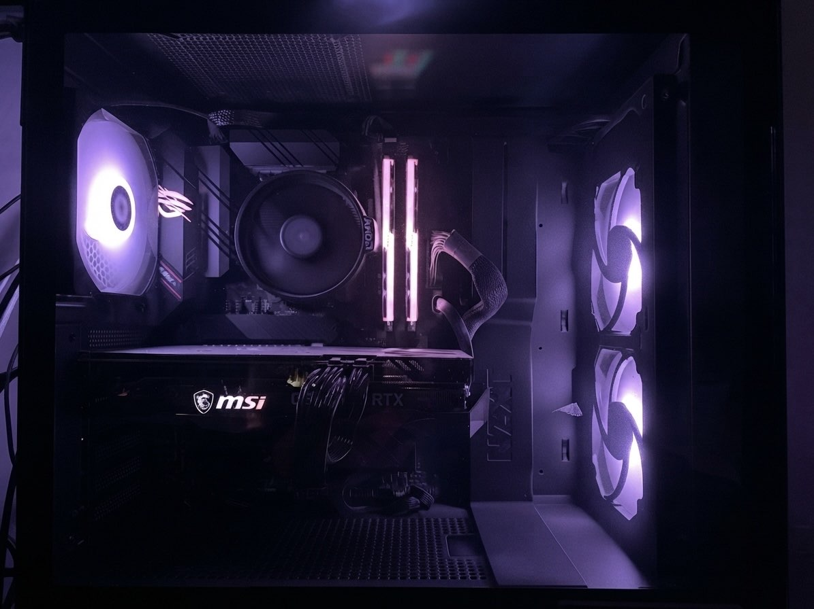
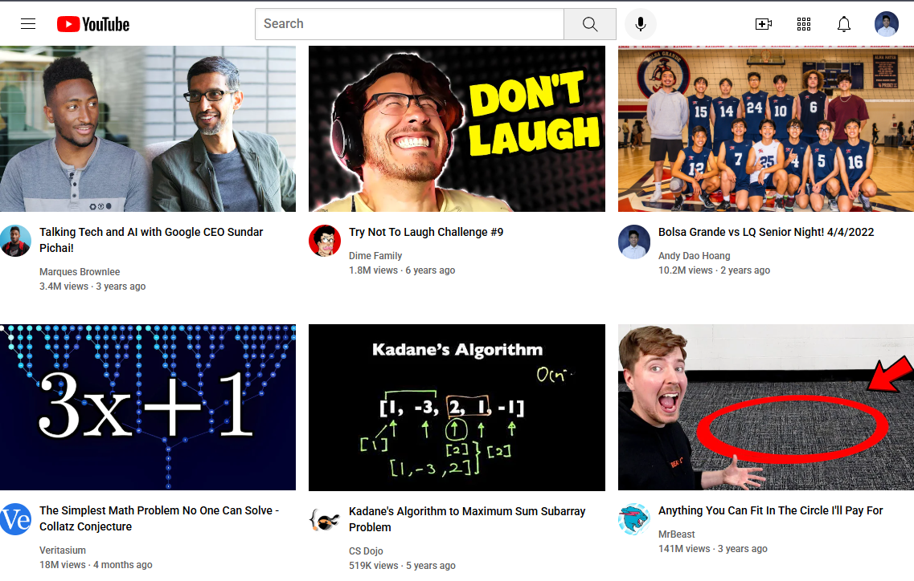

Fabflix is an e-commerce platform I architected and deployed on Apache Tomcat. The system utilizes a hybrid database infrastructure, leveraging MySQL for core transaction management while utilizing MongoDB for the primary movie dataset to optimize query performance. I engineered a custom ETL pipeline that uses SAX parsers to efficiently process and validate XML data against DTD files, automating the ingestion of over 70,000 records. Security and user experience are core components of the platform: I implemented Jasypt to handle robust password encryption at rest, integrated Google reCAPTCHA for authentication, and developed a custom LoginFilter to manage session-based access control, ensuring that only authenticated users can access protected site pages. Furthermore, I developed an asynchronous search engine that provides real-time autocomplete results as users navigate the site.
Wildlife project is an end-to-end AI-powered wildlife monitoring pipeline the PixelNature team engineered for UCI Campus Reserves to automate the classification of wildlife camera trap images at scale. Built through an iterative development lifecycle with recurring stakeholder meetings, I served as QA lead — owning quality assurance, performance, scalability, and user acceptance testing throughout the production cycle. The system integrates SpeciesNet, a two-stage computer vision model by Google, into a multi-stage Python pipeline spanning Google Drive ingestion, ML inference, metadata extraction, burst deduplication, and structured CSV export, backed by a FastAPI REST API. The platform spans 7 pages; I led development of the About page, the Run Pipeline page — giving researchers full control over pipeline execution, confidence thresholds, and run history — and the Review & Modify page, which drives the human-in-the-loop workflow by enabling manual species correction, persistent review decisions, and one-click export finalization. As QA lead, I resolved a critical production bug where the user-facing confidence threshold was incorrectly controlling the model's detection threshold, causing complete detection failure at high values and hallucinated species at low values — traced across five pipeline stages.
The project's goal was to build a real-time, peer-to-peer multiplayer Tic-Tac-Toe game to deepen my understanding of network programming and GUI state management. The application uses a simple Python's socket library to establish a reliable TCP connection between a host and a client, syncing game states instantly across different machines. I designed a custom object oriented programming based game engine to track logic, handle win/tie conditions, trigger pop up error messages for invalid moves, and long term persist player statistics across multiple rounds, all wrapped in a responsive Tkinter graphical interface.
The goal of this project was to introduce me to MySQL and relational databases, so I engineered a highly decoupled, interactive easy to use desktop application to securely manage geographical records. To achieve this, I built a custom Python Event Bus that facilitates seamless communication between the backend engine and a responsive Tkinter GUI. This Event-Driven Architecture ensures the presentation layer never directly executes database logic; instead, the backend intercepts UI events, validates data, and executes secure, parameterized SQL statements for complex CRUD operations. By gracefully handling key constraints and rendering user-friendly error messages upon invalid entries, this project showcases my ability to design scalable software, implement advanced architectural patterns, and securely manage relational data.

I've built 5+ custom PCs from the ground up for myself, friends, and family — researching and selecting individual hardware components (CPU, motherboard, GPU, RAM, storage, power supply) based on performance needs, budget, and part compatibility. For each build, I worked directly with the end user to understand their budget, intended use case (e.g., gaming, video editing, general productivity), and performance priorities, then translated those requirements into a specific component list. This included ensuring RAM speed and PSU wattage matched motherboard and GPU requirements. I assembled each system from individual parts, managing cable routing and case airflow layout for clean, efficient builds. After assembly, I installed and configured Windows, set up Wi-Fi and network connectivity, and configured each system for the end user's specific needs.

Aside from back-end logic, I have a deep passion for design and front-end development. The goal of this project was to learn the core styling principles of HTML and CSS, so I engineered a simple responsive replica of the classic YouTube homepage. Using advanced CSS techniques like Flexbox and CSS Grid, I ensured the layout adjusts seamlessly to any screen size, whether minimized or maximized. The project features a structured search bar, iconic navigation elements, and interactive thumbnails that link directly to the original videos. Ultimately, this project was my first step at showing my ability to translate complex UI designs into fluid, polished, and user friendly web experiences.